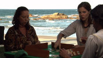

2007 / Rummikub
por Casa 30 anos em 10 de dezembro de 2017
2007: Vai ter Copa
A crise dos subprime, que estoura em fevereiro quebrando bancos e agências de seguros nos EUA, chega em março à Bolsa de Xangai e começa a se alastrar pelas economias comandadas pela especulação, ou seja, pelo mundo inteiro. Após vinte anos de espera, a Estação Cantagalo do metrô do Rio de Janeiro é aberta ao público. O Brasil é confirmado pela FIFA como a sede da Copa do Mundo de Futebol de 2014.
Em 17 de julho, o voo 3054 da TAM, vindo de Porto Alegre, não consegue aterrisar em Congonhas, causando 199 mortes. A Google lança o Google Street View, a Apple a primeira versão do iPhone, e iniciam as primeiras transmissões de TV digital no Brasil, juntamente com a inauguração da TV Brasil. As vendas de aparelhos de TV com tela plana superam os modelos de tubo pela primeira vez.
O novo álbum de Amy Winehouse, com a canção "Rehab", vende 5 milhões de cópias. São roubadas do acervo do MASP as pinturas "Retrato de Suzanne Bloch", de Pablo Picasso, e "O lavrador de café", de Cândido Portinari. Perdemos Ingmar Bergman, Michelangelo Antonioni, Kurt Vonnegut, Norman Mailer, Ozualdo Candeias, Luciano Pavarotti, Paulo Autran, Nair Belo, Marcel Marceau e de nosso parceiro Júlio Spier. Porto Alegre recebe o Theàtre de Soleil.
Em 2007, comemoramos 20 anos de Casa de Cinema com muito trabalho: lançamos os longas "Saneamento básico, o filme" e "3 Efes", gravamos "O padeiro e as revoluções" para a série "Escritores Gaúchos" da RBSTV, "O grão da imagem" sobre a obra de Vera Chaves Barcelos, e ainda o curta "Rummikub", projeto desenvolvido para Turner e para o portal Terra.
*****
2007 / Rummikub (13 min)
Direção: Jorge Furtado
|  |
Num fim de semana chuvoso na praia, duas famílias brigam por causa do Rummikub, um jogo de mesa. Enquanto isso, alheios às brigas dos pais, surge um casal de amantes. |
Produção: Lucas Akoskin
Roteiro: Jorge Furtado
Produção executiva: Nora Goulart, Rita Moraes. Fernando Rodriguez, Luciana Lamberto
Direção de Fotografia: Jacob Solitrenick
Direção de Arte: Rita Faustini
Música: Leo Henkin
Montagem: Giba Assis Brasil
Elenco: Alice Braga, Pedro Furtado, Patsy Cecato, Nelson Diniz, Elisa Volpato
Uma Produção: Terra Shorts, Surdream, FYB Film Production
Realização: Casa de Cinema PoA
Disponível de 10 a 16/dez
Legendas em inglês, português
**********
MOSTRA CASA DE CINEMA: 30 ANOS, 30 FILMES
1987 / O dia em que Dorival encarou a guarda
1988 / Barbosa
1989 / Ilha das flores
1990 / Memória
1991 / O vampiro de Novo Hamburgo (e outros)
1992 / Esta não é a sua vida
1993 / Ventre livre
1994 / A matadeira
1995 / Deus ex-machina
1996 / Um homem sério
1997 / Anchietanos
1998 / Trampolim
1999 / Três minutos
2000 / O sanduíche
2001 / Dia de visita (disponível até 10/dez)
2002 / Dona Cristina perdeu a memória (disponível até 11/dez)
2003 / A hora da estrela (disponível até 12/dez)
2004 / Meu tio matou um cara (disponível até 13/dez)
2005 / O resto é silêncio (disponível até 14/dez)
2006 / Um | dos | três (disponíveis até 15/dez)
2007 / Rummikub (disponível até 16/dez)